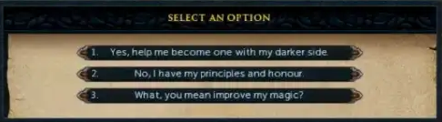
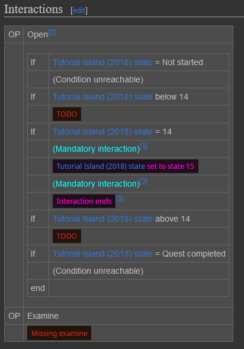

RuneLibris Devlog #2
While working on the infrastructure RuneLibris, I decided to try to archive the quest Witch's Potion as I determined it was the simplest quest in the game. While preserving data, I noticed that some dialogue for this quest was reworked in RuneScape 3. The interaction in question that was removed is the following choice at the start of the quest:

Both “Yes, help me become one with my darker side.” and “What, you mean improve my magic?” are valid options to start the quest. All the YouTube videos I found chose either one of those, but I did not find a single piece of footage of what happens when “No, I have my principles and honour.” is selected. I found this concerning as this is one of the most accessible quest in the game (it is free to play and has no requirements).
Now, I am not worried about Witch's Potion specifically as the quest still exists in Old School RuneScape and was archived in other preservation projects. That being said I still think that this is a perfect example on why YouTube videos alone are not enough to preserve the game.
As mentioned in the previous devlog (link), quests takes forever to archive. I came to the realization that instead of archiving the entire quest, I should instead identify the “non-standard” path. I prototyped this method with Witch's Potion; indexing the standard path only took me 14 minutes. That seems more efficient than my previous method. It should also go without saying that all content will need to be archived in the end, but I do think focusing on what will inevitably be missed the right thing to do at this stage. The standard path is identified using special templates:

I also did some further investigation on quest varbits. I came to the conclusion that they should be disregarded in favor of made-up variable that increase based on gameplay footage. This is because we have no idea what happens with quest varbits on Jagex's side. On a related note, it was found that the completed state of the quest journal interface does not even reflect the varbit endvalue stored in the cache. Aside from measuring which quests are the smallest, information related to quest varbit is pretty much useless for this project.
Another thing I was working on this week are validation tables. This DPL-based system I created to make sure every aspect of a piece of content is documented. The best thing about this system is that new validation checks can be added in the future without forgetting about content that is considered archived. For example, if I had archived 20 quests already and just now suddenly remembered that the quest journal was a thing, the table would remind me that those 20 quests do not have their journal archived.
As for my immediate future plans, I intent to continue working on the RuneLibris infrastructure. I still have a lot of things to do before I can actually start preserving data.
Written by manpaint on 07 April 2025.